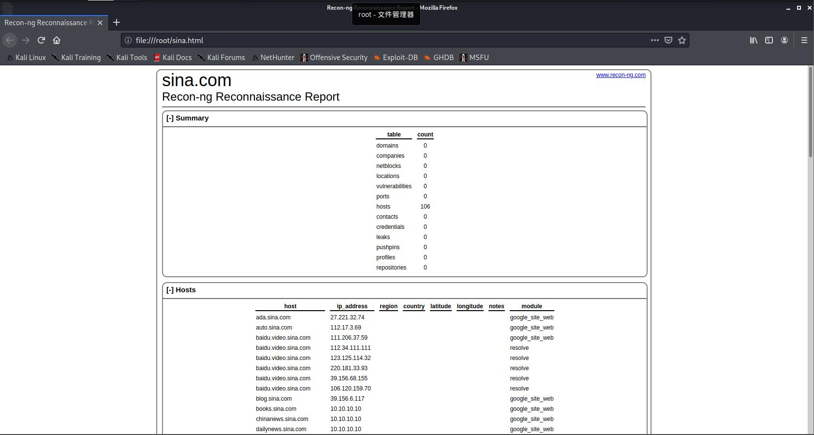

简介
recon-ng是一个基于命令行的信息搜集框架，类似于msf，有很多不同的模块，根据需求调用搜索引擎完成信息搜集，并将结果存入数据库，在学完苑房弘老师的课后发现新版本有了很大的变化，虽然根本框架没变，但是指令用法变化很大，新版本还有一个大变化就是模块需要自己下载，默认不带模块
版本
┌──(root💀kali)-[~]
└─# recon-ng --version
5.1.1
┌──(root💀kali)-[~]
└─# uname -a
Linux kali 5.9.0-kali2-amd64 #1 SMP Debian 5.9.6-1kali1 (2020-11-11) x86_64 GNU/Linux
用法
类似msf，直接recon-ng命令进入框架命令行，也有一些参数，常用的有-r和-w
-r 指定一个命令文件，执行其中命令，可以用来解决重复性工作
-w 指定一个工作区，用以隔离不同信息搜集任务
┌──(root💀kali)-[~]
└─# recon-ng -h
usage: recon-ng [-h] [-w workspace] [-r filename] [--no-version] [--no-analytics] [--no-marketplace] [--stealth] [--accessible] [--version]
recon-ng - Tim Tomes (@lanmaster53)
optional arguments:
-h, --help show this help message and exit
-w workspace load/create a workspace
-r filename load commands from a resource file
--no-version disable version check. Already disabled by default in Debian
--no-analytics disable analytics reporting. Already disabled by default in Debian
--no-marketplace disable remote module management
--stealth disable all passive requests (--no-*)
--accessible Use accessible outputs when available
--version displays the current version进入recon-ng命令行，不指定工作区默认进入default工作区，先看一下help命令结果
[recon-ng][default] > help
Commands (type [help|?] <topic>):
---------------------------------
back Exits the current context
dashboard Displays a summary of activity
db Interfaces with the workspace's database
exit Exits the framework
help Displays this menu
index Creates a module index (dev only)
keys Manages third party resource credentials
marketplace Interfaces with the module marketplace
modules Interfaces with installed modules
options Manages the current context options
pdb Starts a Python Debugger session (dev only)
script Records and executes command scripts
shell Executes shell commands
show Shows various framework items
snapshots Manages workspace snapshots
spool Spools output to a file
workspaces Manages workspaces因为要去github上下模块而其还会调用Google等搜索引擎，需要给recon-ng挂一个代理，可以看出options还可以设置ua头，线程，dns，超时时间，这里线程不建议太大，请求太多搜索引擎会暂时封禁我们的请求
[recon-ng][example] > options list
Name Current Value Required Description
---------- ------------- -------- -----------
NAMESERVER 8.8.8.8 yes default nameserver for the resolver mixin
PROXY no proxy server (address:port)
THREADS 10 yes number of threads (where applicable)
TIMEOUT 10 yes socket timeout (seconds)
USER-AGENT Recon-ng/v5 yes user-agent string
VERBOSITY 1 yes verbosity level (0 = minimal, 1 = verbose, 2 = debug)
[recon-ng][example] > options set PROXY 192.168.59.1:7890
PROXY => 192.168.59.1:7890marketplace命令用于下载模块，第一次使用要用refresh命令更新模块列表的缓存，search搜索模块，install安装模块
[recon-ng][example] > marketplace refresh
[*] Marketplace index refreshed.
[recon-ng][example] > marketplace search google
[*] Searching module index for 'google'...
+--------------------------------------------------------------------------------+
| Path | Version | Status | Updated | D | K |
+--------------------------------------------------------------------------------+
| recon/domains-hosts/google_site_web | 1.0 | installed | 2019-06-24 | | |
+--------------------------------------------------------------------------------+
D = Has dependencies. See info for details.
K = Requires keys. See info for details.
[recon-ng][example] > marketplace install recon/domains-hosts/google_site_web
[*] Module installed: recon/domains-hosts/google_site_web
[*] Reloading modules...module命令加载模块，info查看模块简介
[recon-ng][example] > modules load recon/domains-hosts/google_site_web
[recon-ng][example][google_site_web] > info
Name: Google Hostname Enumerator
Author: Tim Tomes (@lanmaster53)
Version: 1.0
Description:
Harvests hosts from Google.com by using the 'site' search operator. Updates the 'hosts' table with
the results.
Options:
Name Current Value Required Description
------ ------------- -------- -----------
SOURCE default yes source of input (see 'info' for details)
Source Options:
default SELECT DISTINCT domain FROM domains WHERE domain IS NOT NULL
<string> string representing a single input
<path> path to a file containing a list of inputs
query <sql> database query returning one column of inputsoption设置好参数就可以跑了
[recon-ng][example][google_site_web] > options set SOURCE sina.com
SOURCE => sina.com
[recon-ng][example][google_site_web] > run
--------
SINA.COM
--------
[*] Searching Google for: site:sina.com
[*] Country: None
[*] Host: m.us.sina.com
[*] Ip_Address: None
[*] Latitude: None
[*] Longitude: None
[*] Notes: None
[*] Region: None
[*] --------------------------------------------------
[*] Country: None
[*] Host: eva.sina.com
[*] Ip_Address: None
[*] Latitude: None
[*] Longitude: None
[*] Notes: None
[*] Region: None
[*] --------------------------------------------------
........以下结果省略show命令可以查看结果，可以看主机，域名，端口等很多结果，我们用的Google模块是主机发现模块，可以看见发现了很多主机
[recon-ng][example][google_site_web] > show
Shows various framework items
Usage: show <companies|contacts|credentials|domains|hosts|leaks|locations|netblocks|ports|profiles|pushpins|repositories|vulnerabilities>
[recon-ng][example][google_site_web] > show hosts
+--------------------------------------------------------------------------------------------------------------------+
| rowid | host | ip_address | region | country | latitude | longitude | notes | module |
+--------------------------------------------------------------------------------------------------------------------+
| 1 | m.us.sina.com | | | | | | | google_site_web |
| 2 | eva.sina.com | | | | | | | google_site_web |
| 3 | match.sina.com | | | | | | | google_site_web |
| 4 | ipad.us.sina.com | | | | | | | google_site_web |
| 5 | home.sina.com | | | | | | | google_site_web |
| 6 | mall.sina.com | | | | | | | google_site_web |
| 7 | med.sina.com | | | | | | | google_site_web |
| 8 | books.sina.com | | | | | | | google_site_web |
| 9 | mycd.sina.com | | | | | | | google_site_web |
| 10 | henan.sina.com | | | | | | | google_site_web |
| 11 | finance.sina.com | | | | | | | google_site_web |
| 12 | hainan.sina.com | | | | | | | google_site_web |
| 13 | dailynews.sina.com | | | | | | | google_site_web |
| 14 | chinanews.sina.com | | | | | | | google_site_web |
| 15 | t.sina.com | | | | | | | google_site_web |
| 16 | ipop.sina.com | | | | | | | google_site_web |
| 17 | slide.dailynews.sina.com | | | | | | | google_site_web |
| 18 | slide.sports.sina.com | | | | | | | google_site_web |
| 19 | mt.sina.com | | | | | | | google_site_web |
| 20 | weibo.sina.com | | | | | | | google_site_web |
| 21 | ent.sina.com | | | | | | | google_site_web |
| 22 | travel.sina.com | | | | | | | google_site_web |
| 23 | deals.sina.com | | | | | | | google_site_web |
| 24 | sh.sina.com | | | | | | | google_site_web |
| 25 | ir.sina.com | | | | | | | google_site_web |
| 26 | winner.sina.com | | | | | | | google_site_web |
| 27 | blog.sina.com | | | | | | | google_site_web |
| 28 | fj.sina.com | | | | | | | google_site_web |
| 29 | english.sina.com | | | | | | | google_site_web |
| 30 | sc.sina.com | | | | | | | google_site_web |
| 31 | mail.sina.com | | | | | | | google_site_web |
| 32 | newyorklife.sina.com | | | | | | | google_site_web |
| 33 | hb.sina.com | | | | | | | google_site_web |
| 34 | mil.firefox.sina.com | | | | | | | google_site_web |
| 35 | video.sina.com | | | | | | | google_site_web |
| 36 | house.sina.com | | | | | | | google_site_web |
| 37 | t.us.sina.com | | | | | | | google_site_web |
| 38 | news.sina.com | | | | | | | google_site_web |
| 39 | eva.game.sina.com | | | | | | | google_site_web |
| 40 | financenews.sina.com | | | | | | | google_site_web |
| 41 | game.sina.com | | | | | | | google_site_web |
| 42 | sichuan.sina.com | | | | | | | google_site_web |
| 43 | redirect.sina.com | | | | | | | google_site_web |
| 44 | fujian.sina.com | | | | | | | google_site_web |
| 45 | echineselearning.sina.com | | | | | | | google_site_web |
| 46 | zt.sina.com | | | | | | | google_site_web |
| 47 | zx.eladies.sina.com | | | | | | | google_site_web |
| 48 | immigration.sina.com | | | | | | | google_site_web |
| 49 | dldl.game.sina.com | | | | | | | google_site_web |
| 50 | yuqing.sina.com | | | | | | | google_site_web |
| 51 | magazine.sina.com | | | | | | | google_site_web |
| 52 | ada.sina.com | | | | | | | google_site_web |
| 53 | ftx30s012.sports.sina.com | | | | | | | google_site_web |
| 54 | ftx30s1.sports.sina.com | | | | | | | google_site_web |
| 55 | auto.sina.com | | | | | | | google_site_web |
| 56 | baidu.video.sina.com | | | | | | | google_site_web |
| 57 | vip.sina.com | | | | | | | google_site_web |
| 58 | gb.comic.sina.com | | | | | | | google_site_web |
+--------------------------------------------------------------------------------------------------------------------+
[*] 58 rows returnedback退出模块，可以安装recon/hosts-hosts/resolve模块把域名变为IP，我已经安装好了，就直接module加载了
[recon-ng][example][google_site_web] > back
[recon-ng][example] > modules search res
[*] Searching installed modules for 'res'...
Discovery
---------
discovery/info_disclosure/interesting_files
Recon
-----
recon/hosts-hosts/resolve
recon/hosts-hosts/reverse_resolve
recon/netblocks-hosts/reverse_resolve
[recon-ng][example] > modules load recon/hosts-hosts/resolve
[recon-ng][example][resolve] > options list
Name Current Value Required Description
------ ------------- -------- -----------
SOURCE default yes source of input (see 'info' for details)
[recon-ng][example][resolve] > run
[*] m.us.sina.com => 10.10.10.10
[*] eva.sina.com => 220.181.84.153
[*] match.sina.com => 10.10.10.10
[*] ipad.us.sina.com => 10.10.10.10
[*] home.sina.com => 10.10.10.10
[*] mall.sina.com => 66.102.251.25
[*] med.sina.com => 111.6.243.173
[*] books.sina.com => 10.10.10.10
[*] mycd.sina.com => Unknown
[*] henan.sina.com => 112.17.3.69
[*] finance.sina.com => 10.10.10.10
[*] hainan.sina.com => 112.17.3.69
[*] dailynews.sina.com => 10.10.10.10
[*] chinanews.sina.com => 10.10.10.10
[*] t.sina.com => 112.17.3.69
[*] ipop.sina.com => 10.10.10.10
以下省略再通过show查看就会发现域名都解析成了IP，有部分因为域名不是A记录所以解析不成功
[recon-ng][example][resolve] > show hosts
+-------------------------------------------------------------------------------------------------------------------------+
| rowid | host | ip_address | region | country | latitude | longitude | notes | module |
+-------------------------------------------------------------------------------------------------------------------------+
| 1 | m.us.sina.com | 10.10.10.10 | | | | | | google_site_web |
| 2 | eva.sina.com | 220.181.84.153 | | | | | | google_site_web |
| 3 | match.sina.com | 10.10.10.10 | | | | | | google_site_web |
| 4 | ipad.us.sina.com | 10.10.10.10 | | | | | | google_site_web |
| 5 | home.sina.com | 10.10.10.10 | | | | | | google_site_web |
| 6 | mall.sina.com | 66.102.251.25 | | | | | | google_site_web |
| 7 | med.sina.com | 111.6.243.173 | | | | | | google_site_web |
| 8 | books.sina.com | 10.10.10.10 | | | | | | google_site_web |
| 9 | mycd.sina.com | | | | | | | google_site_web |
| 10 | henan.sina.com | 112.17.3.69 | | | | | | google_site_web |
| 11 | finance.sina.com | 10.10.10.10 | | | | | | google_site_web |
| 12 | hainan.sina.com | 112.17.3.69 | | | | | | google_site_web |
| 13 | dailynews.sina.com | 10.10.10.10 | | | | | | google_site_web |
| 14 | chinanews.sina.com | 10.10.10.10 | | | | | | google_site_web |
| 15 | t.sina.com | 112.17.3.69 | | | | | | google_site_web |
| 16 | ipop.sina.com | 10.10.10.10 | | | | | | google_site_web |
| 17 | slide.dailynews.sina.com | 10.10.10.10 | | | | | | google_site_web |
| 18 | slide.sports.sina.com | 10.10.10.10 | | | | | | google_site_web |
| 19 | mt.sina.com | 27.221.32.27 | | | | | | google_site_web |
| 20 | weibo.sina.com | 112.17.3.69 | | | | | | google_site_web |
| 21 | ent.sina.com | 10.10.10.10 | | | | | | google_site_web |
| 22 | travel.sina.com | 10.10.10.10 | | | | | | google_site_web |
| 23 | deals.sina.com | 54.215.9.31 | | | | | | google_site_web |
| 24 | sh.sina.com | 112.17.3.69 | | | | | | google_site_web |
| 25 | ir.sina.com | 23.199.133.165 | | | | | | google_site_web |
| 26 | winner.sina.com | 39.156.6.98 | | | | | | google_site_web |
| 27 | blog.sina.com | 39.156.6.117 | | | | | | google_site_web |
| 28 | fj.sina.com | 112.17.3.69 | | | | | | google_site_web |
| 29 | english.sina.com | 112.13.107.244 | | | | | | google_site_web |
| 30 | sc.sina.com | 112.17.3.69 | | | | | | google_site_web |
| 31 | mail.sina.com | 39.156.6.98 | | | | | | google_site_web |
| 32 | newyorklife.sina.com | 66.102.251.33 | | | | | | google_site_web |
| 33 | hb.sina.com | 112.17.3.69 | | | | | | google_site_web |
| 34 | mil.firefox.sina.com | | | | | | | google_site_web |
| 35 | video.sina.com | 10.10.10.10 | | | | | | google_site_web |
| 36 | house.sina.com | 112.15.1.222 | | | | | | google_site_web |
| 37 | t.us.sina.com | 66.102.251.33 | | | | | | google_site_web |
| 38 | news.sina.com | 10.10.10.10 | | | | | | google_site_web |
| 39 | eva.game.sina.com | 47.75.70.85 | | | | | | google_site_web |
| 40 | financenews.sina.com | 10.10.10.10 | | | | | | google_site_web |
| 41 | game.sina.com | 27.221.32.27 | | | | | | google_site_web |
| 42 | sichuan.sina.com | 112.17.3.69 | | | | | | google_site_web |
| 43 | redirect.sina.com | 47.246.25.230 | | | | | | google_site_web |
| 44 | fujian.sina.com | | | | | | | google_site_web |
| 45 | echineselearning.sina.com | 111.3.79.225 | | | | | | google_site_web |
| 46 | zt.sina.com | 10.10.10.10 | | | | | | google_site_web |
| 47 | zx.eladies.sina.com | 39.156.6.98 | | | | | | google_site_web |
| 48 | immigration.sina.com | 10.10.10.10 | | | | | | google_site_web |
| 49 | dldl.game.sina.com | 27.221.32.27 | | | | | | google_site_web |
| 50 | yuqing.sina.com | 180.153.135.186 | | | | | | google_site_web |
| 51 | magazine.sina.com | 10.10.10.10 | | | | | | google_site_web |
| 52 | ada.sina.com | 27.221.32.74 | | | | | | google_site_web |
| 53 | ftx30s012.sports.sina.com | 47.112.107.191 | | | | | | google_site_web |
| 54 | ftx30s1.sports.sina.com | 47.112.107.191 | | | | | | google_site_web |
| 55 | auto.sina.com | 112.17.3.69 | | | | | | google_site_web |
| 56 | baidu.video.sina.com | 111.206.37.59 | | | | | | google_site_web |
| 57 | vip.sina.com | 39.156.6.179 | | | | | | google_site_web |
| 58 | gb.comic.sina.com | 66.102.251.33 | | | | | | google_site_web |
| 59 | english.sina.com | 111.3.79.228 | | | | | | resolve |
| 60 | english.sina.com | 112.15.1.229 | | | | | | resolve |
| 61 | english.sina.com | 111.1.160.229 | | | | | | resolve |
| 62 | english.sina.com | 111.3.86.233 | | | | | | resolve |
| 63 | english.sina.com | 111.3.86.226 | | | | | | resolve |
| 64 | english.sina.com | 111.3.86.228 | | | | | | resolve |
| 65 | english.sina.com | 111.1.160.232 | | | | | | resolve |
| 66 | english.sina.com | 111.1.160.226 | | | | | | resolve |
| 67 | english.sina.com | 111.1.160.228 | | | | | | resolve |
| 68 | english.sina.com | 112.15.1.225 | | | | | | resolve |
| 69 | english.sina.com | 112.15.1.224 | | | | | | resolve |
| 70 | english.sina.com | 111.3.79.230 | | | | | | resolve |
| 71 | house.sina.com | 111.1.160.7 | | | | | | resolve |
| 72 | house.sina.com | 112.13.107.240 | | | | | | resolve |
| 73 | house.sina.com | 111.3.79.227 | | | | | | resolve |
| 74 | house.sina.com | 111.3.86.228 | | | | | | resolve |
| 75 | house.sina.com | 111.3.86.230 | | | | | | resolve |
| 76 | house.sina.com | 111.3.86.227 | | | | | | resolve |
| 77 | house.sina.com | 111.3.79.226 | | | | | | resolve |
| 78 | house.sina.com | 111.1.160.227 | | | | | | resolve |
| 79 | house.sina.com | 111.1.160.230 | | | | | | resolve |
| 80 | house.sina.com | 111.1.160.229 | | | | | | resolve |
| 81 | house.sina.com | 112.15.1.227 | | | | | | resolve |
| 82 | house.sina.com | 112.15.1.226 | | | | | | resolve |
| 83 | redirect.sina.com | 47.246.25.229 | | | | | | resolve |
| 84 | redirect.sina.com | 47.246.25.228 | | | | | | resolve |
| 85 | redirect.sina.com | 47.246.25.232 | | | | | | resolve |
| 86 | redirect.sina.com | 47.246.25.231 | | | | | | resolve |
| 87 | redirect.sina.com | 47.246.25.227 | | | | | | resolve |
| 88 | redirect.sina.com | 47.246.25.226 | | | | | | resolve |
| 89 | redirect.sina.com | 47.246.25.225 | | | | | | resolve |
| 90 | echineselearning.sina.com | 112.13.107.248 | | | | | | resolve |
| 91 | echineselearning.sina.com | 111.1.160.230 | | | | | | resolve |
| 92 | echineselearning.sina.com | 112.15.1.224 | | | | | | resolve |
| 93 | echineselearning.sina.com | 111.3.86.227 | | | | | | resolve |
| 94 | echineselearning.sina.com | 111.3.86.233 | | | | | | resolve |
| 95 | echineselearning.sina.com | 111.3.86.229 | | | | | | resolve |
| 96 | echineselearning.sina.com | 112.15.1.227 | | | | | | resolve |
| 97 | echineselearning.sina.com | 112.15.1.225 | | | | | | resolve |
| 98 | echineselearning.sina.com | 111.1.160.7 | | | | | | resolve |
| 99 | echineselearning.sina.com | 111.1.160.229 | | | | | | resolve |
| 100 | echineselearning.sina.com | 111.1.160.232 | | | | | | resolve |
| 101 | echineselearning.sina.com | 111.3.79.224 | | | | | | resolve |
| 102 | baidu.video.sina.com | 112.34.111.111 | | | | | | resolve |
| 103 | baidu.video.sina.com | 123.125.114.32 | | | | | | resolve |
| 104 | baidu.video.sina.com | 220.181.33.93 | | | | | | resolve |
| 105 | baidu.video.sina.com | 39.156.68.155 | | | | | | resolve |
| 106 | baidu.video.sina.com | 106.120.159.70 | | | | | | resolve |
+-------------------------------------------------------------------------------------------------------------------------+
[*] 106 rows returned可以通过导出模块导出为不同格式的报告
[recon-ng][example] > modules load reporting/html
[recon-ng][example][html] > options list
Name Current Value Required Description
-------- ------------- -------- -----------
CREATOR yes use creator name in the report footer
CUSTOMER yes use customer name in the report header
FILENAME /root/.recon-ng/workspaces/example/results.html yes path and filename for report output
SANITIZE True yes mask sensitive data in the report
[recon-ng][example][html] > options set CREATOR nbb
CREATOR => nbb
[recon-ng][example][html] > options set CUSTOMER sina.com
CUSTOMER => sina.com
[recon-ng][example][html] > options set FILENAME /root/sina.html
FILENAME => /root/sina.html
[recon-ng][example][html] > run
[*] Report generated at '/root/sina.html'.html报告长这样

可以通过marketplace info查看模块详细信息，双击tab可以显示所有模块，用法都类似
[recon-ng][example] > marketplace info
Display all 116 possibilities? (y or n)
discovery/info_disclosure/cache_snoop recon/domains-contacts/whois_pocs recon/hosts-locations/migrate_hosts
discovery/info_disclosure/interesting_files recon/domains-contacts/wikileaker recon/hosts-ports/binaryedge
exploitation/injection/command_injector recon/domains-credentials/pwnedlist/account_creds recon/hosts-ports/shodan_ip
exploitation/injection/xpath_bruter recon/domains-credentials/pwnedlist/api_usage recon/locations-locations/geocode
import/csv_file recon/domains-credentials/pwnedlist/domain_creds recon/locations-locations/reverse_geocode
import/list recon/domains-credentials/pwnedlist/domain_ispwned recon/locations-pushpins/flickr
import/masscan recon/domains-credentials/pwnedlist/leak_lookup recon/locations-pushpins/shodan
import/nmap recon/domains-credentials/pwnedlist/leaks_dump recon/locations-pushpins/twitter
recon/companies-contacts/bing_linkedin_cache recon/domains-credentials/scylla recon/locations-pushpins/youtube
recon/companies-contacts/censys_email_address recon/domains-domains/brute_suffix recon/netblocks-companies/censys_netblock_company
recon/companies-contacts/pen recon/domains-hosts/binaryedge recon/netblocks-companies/whois_orgs
recon/companies-domains/censys_subdomains recon/domains-hosts/bing_domain_api recon/netblocks-hosts/censys_netblock
recon/companies-domains/pen recon/domains-hosts/bing_domain_web recon/netblocks-hosts/reverse_resolve
recon/companies-domains/viewdns_reverse_whois recon/domains-hosts/brute_hosts recon/netblocks-hosts/shodan_net
recon/companies-domains/whoxy_dns recon/domains-hosts/builtwith recon/netblocks-hosts/virustotal
recon/companies-hosts/censys_org recon/domains-hosts/censys_domain recon/netblocks-ports/census_2012
recon/companies-hosts/censys_tls_subjects recon/domains-hosts/certificate_transparency recon/netblocks-ports/censysio
recon/companies-multi/github_miner recon/domains-hosts/google_site_web recon/ports-hosts/migrate_ports
recon/companies-multi/shodan_org recon/domains-hosts/hackertarget recon/ports-hosts/ssl_scan
recon/companies-multi/whois_miner recon/domains-hosts/mx_spf_ip recon/profiles-contacts/bing_linkedin_contacts
recon/contacts-contacts/abc recon/domains-hosts/netcraft recon/profiles-contacts/dev_diver
recon/contacts-contacts/mailtester recon/domains-hosts/shodan_hostname recon/profiles-contacts/github_users
recon/contacts-contacts/mangle recon/domains-hosts/spyse_subdomains recon/profiles-profiles/namechk
recon/contacts-contacts/unmangle recon/domains-hosts/ssl_san recon/profiles-profiles/profiler
recon/contacts-credentials/hibp_breach recon/domains-hosts/threatcrowd recon/profiles-profiles/twitter_mentioned
recon/contacts-credentials/hibp_paste recon/domains-hosts/threatminer recon/profiles-profiles/twitter_mentions
recon/contacts-credentials/scylla recon/domains-vulnerabilities/ghdb recon/profiles-repositories/github_repos
recon/contacts-domains/migrate_contacts recon/domains-vulnerabilities/xssed recon/repositories-profiles/github_commits
recon/contacts-profiles/fullcontact recon/hosts-domains/migrate_hosts recon/repositories-vulnerabilities/gists_search
recon/credentials-credentials/adobe recon/hosts-hosts/bing_ip recon/repositories-vulnerabilities/github_dorks
recon/credentials-credentials/bozocrack recon/hosts-hosts/censys_hostname reporting/csv
recon/credentials-credentials/hashes_org recon/hosts-hosts/censys_ip reporting/html
recon/domains-companies/censys_companies recon/hosts-hosts/censys_query reporting/json
recon/domains-companies/pen recon/hosts-hosts/ipinfodb reporting/list
recon/domains-companies/whoxy_whois recon/hosts-hosts/ipstack reporting/proxifier
recon/domains-contacts/hunter_io recon/hosts-hosts/resolve reporting/pushpin
recon/domains-contacts/metacrawler recon/hosts-hosts/reverse_resolve reporting/xlsx
recon/domains-contacts/pen recon/hosts-hosts/ssltools reporting/xml
recon/domains-contacts/pgp_search recon/hosts-hosts/virustotal